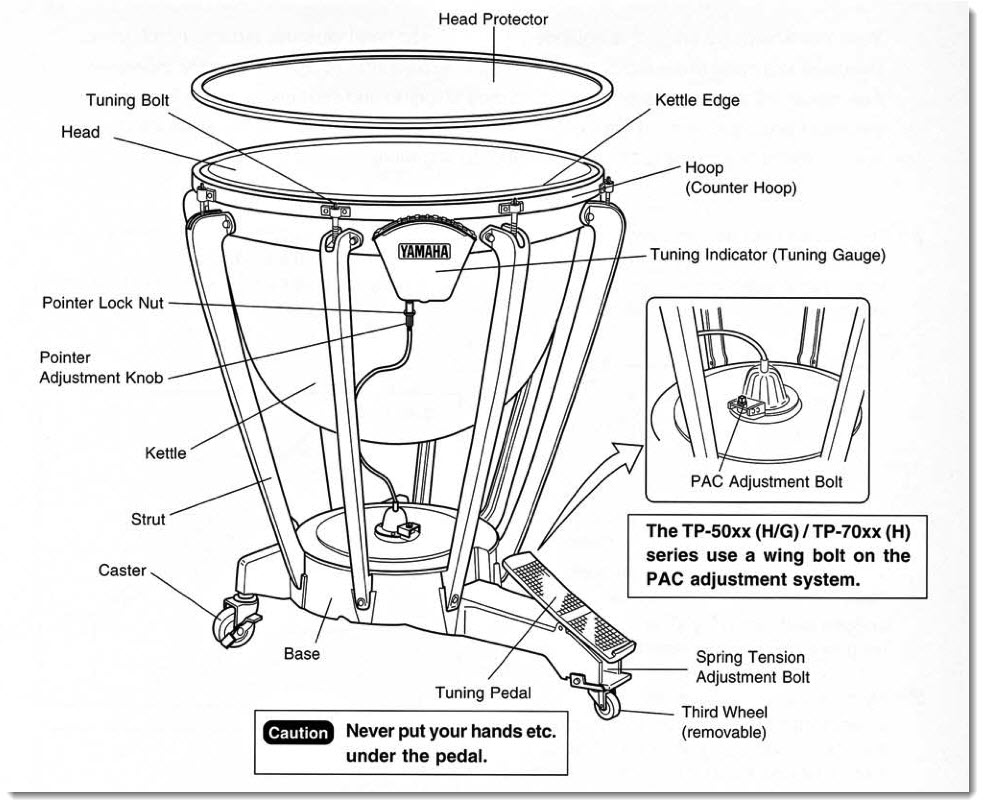

The Timpani
The timpani, sometimes called the kettle drum, is a member of the percussion family. Timpani are made with a synthetic head stretched over a copper body. In the standard orchestral percussion section, the timpani is the only pitched drum. Timpani are unique in that they can be tuned during a performance to reach pitches by means of a pedal mechanism. Because of this capability, timpanists must be able to tune the drum in the middle of a sometimes very loud piece. This makes timpanists often times one of the highest paid musicians in the orchestra (after the concertmaster). In orchestras, timpani are positioned on one of the ends of the percussion section, which is located at the very back.
Jokes
What does a timpanist say when he gets to work?
"Would you like fries with that?"